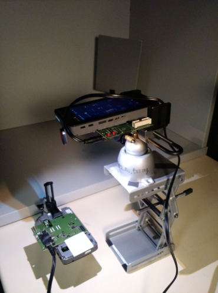

Before tuning the LED flash for lens rolloff, capture raw images using
two devices. In this example, the devices are referred to as device A and device B, where
device A captures images lit by device B.
Capture images for lens rolloff LED1 and LED2
-
Turn off any outside light sources (i.e., overhead lights).
-
Place device A facedown with the lens covered with a diffuser
filter.
-
Place device B roughly 6 inches above device A.
-
Capture one raw image per LED (one for single LED, two for dual
LED):
-
Use device A to capture one image illuminated only by
LED1 of device B by covering LED2 of device B with black tape.
-
Use device A to capture one image illuminated only by
LED2 of device B by covering LED2 of device B with black tape.
Figure : Device A (bottom) capturing images lit by device B (top)
